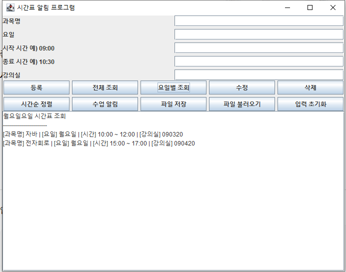

학생들이 개인 시간표를 효율적으로 관리하고 수업 시작 전에 알림을 받을 수 있도록 제작한 Java Swing GUI 기반 시간표 관리 프로그램이다.
| 클래스 | 역할 |
|---|---|
| Main | 프로그램 실행 시작점 |
| TimetableApp | GUI 화면 및 이벤트 처리 |
| ScheduleManager | 시간표 데이터 관리 |
| Subject | 과목 정보 저장 |
Java Swing을 활용하여 GUI 기반 시간표 관리 프로그램을 구현하였다.
사용자는 버튼과 입력창을 이용하여 시간표 등록, 조회, 수정, 삭제 기능을 수행할 수 있다.

과목명, 요일, 시작 시간, 종료 시간, 강의실 정보를 입력하여 시간표를 등록한다.
특정 요일을 입력하면 해당 요일의 수업만 조회할 수 있도록 구현하였다.
등록된 시간표를 선택하여 수정하거나 삭제할 수 있도록 구현하였다.
ObjectOutputStream과 ObjectInputStream을 활용하여 시간표 정보를 저장하고 다시 불러올 수 있도록 구현하였다.
GitHub Release 기능을 활용하여 최종 버전 v1.0.0을 배포하였다.
시간표 알림 프로그램을 통해 Java 객체지향 프로그래밍, GUI 프로그래밍, 파일 입출력, 예외 처리 기술을 학습할 수 있었다.
또한 GitHub를 활용한 협업 및 버전 관리 경험을 쌓을 수 있었으며, 사용자 친화적인 시간표 관리 프로그램을 완성하였다.